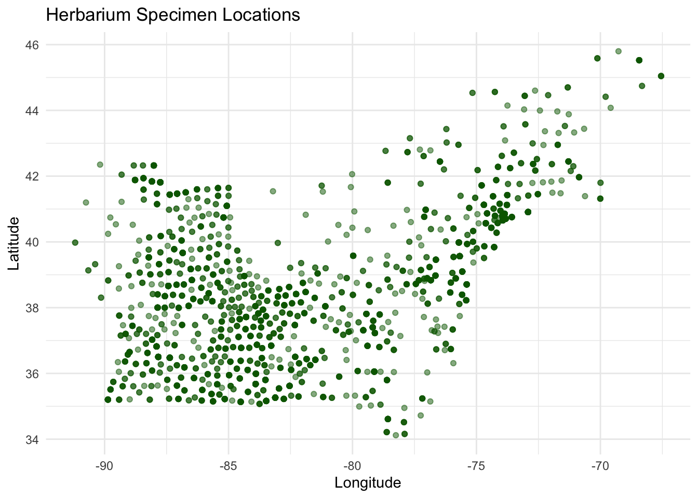
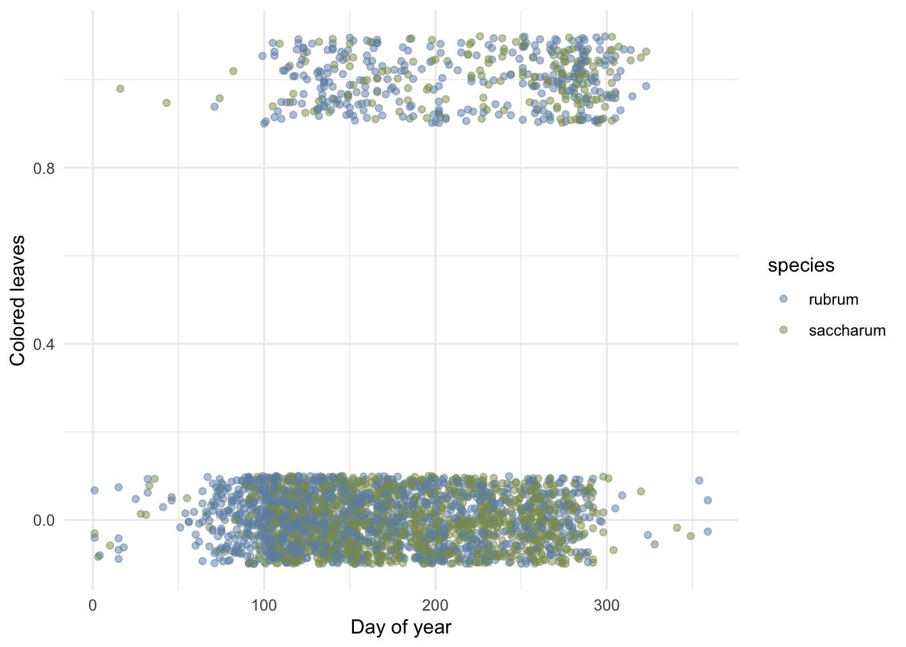
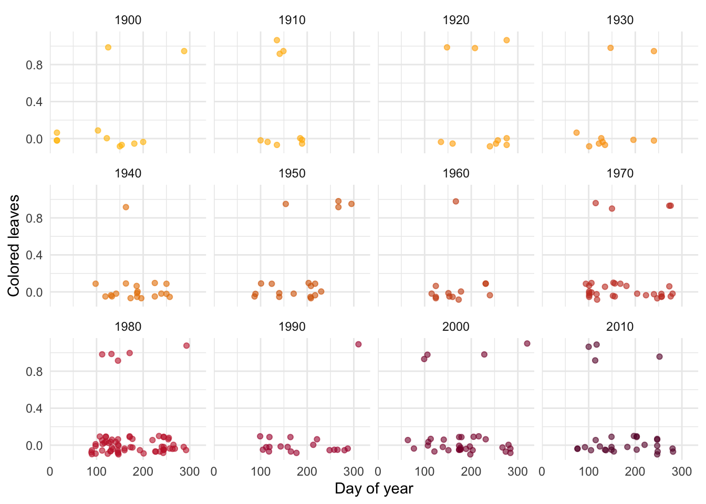
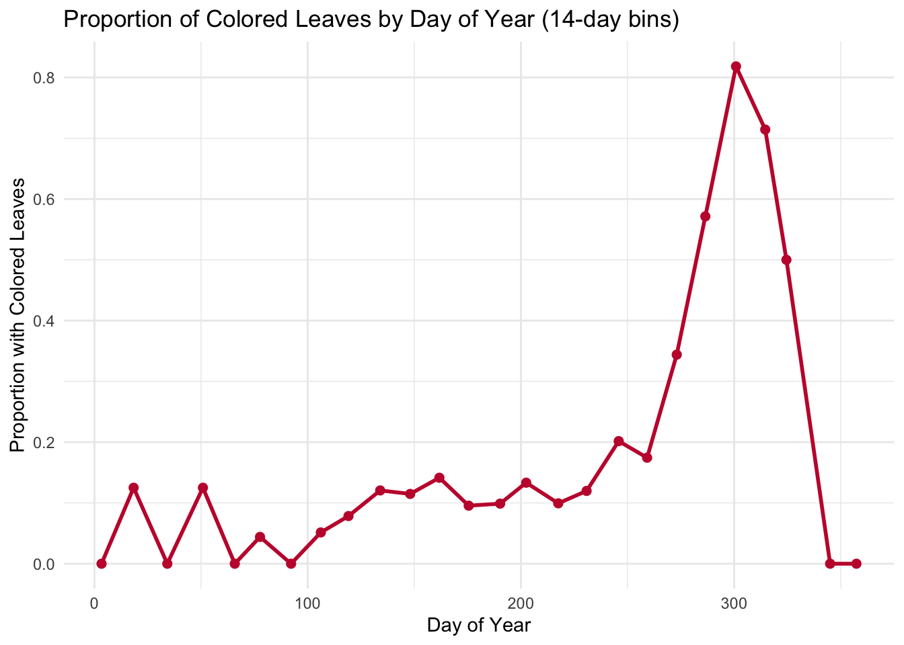
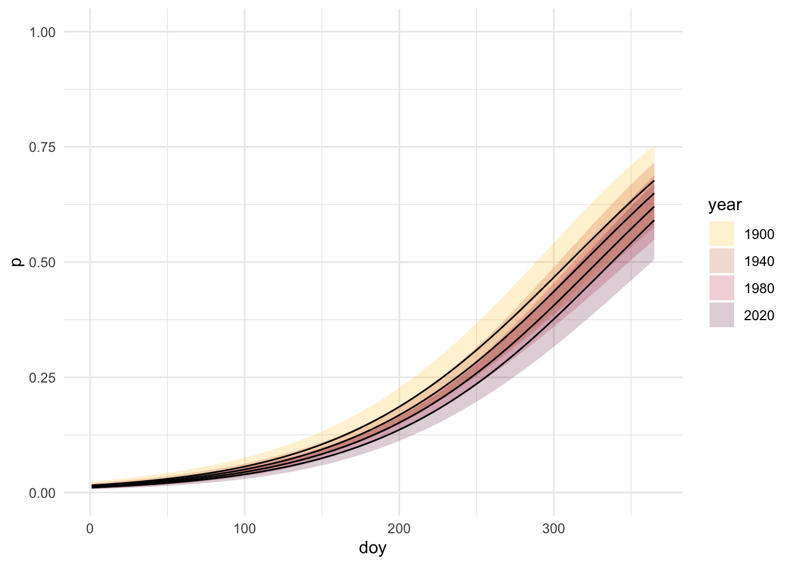
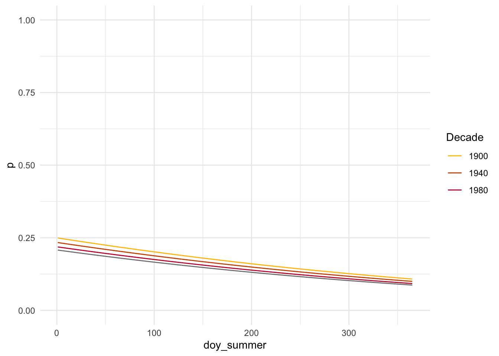

Many studies have found climate-related delays in the timing of leaf coloration, but do not have a lot of data from before the late 20th century (Garretson and Forkner 2021b).
A data set collected by Garretson and Forkner in 2021 from the Southeast Regional Network of Expertise and Collections (SERNEC n.d.) contains evaluations of 2,972 digitized herbaria specimens of red and sugar maples collected between 1826 and 2016. They paired these specimens with climate and locality information to investigate long-term trends in autumn phenology over the past century (Garretson and Forkner 2021a).
Using this data, I want to analyze the effects of day of year (doy), year, and mean fall temperature on the presence of colored leaves as well as determine whether the day of the year when there becomes a higher probability of leaf color is shifting earlier over time.
DAG
I think that year, day of the year, and mean fall temperature all have an effect on whether a leaf is colored. Day of year is a seasonal relationship, where leaf coloration is expected the least in the summer (~180-250 doy) and more after that period in the fall (~250-300 doy). Cooler fall temperatures could cause a quicker onset of leaf coloration and senescence, while warmer mean temperatures could delay it. Year could affect leaf coloration through long-term trends in climate, and could also directly affect mean fall temperatures, as some years are generally warmer or cooler than others.
Load packages and data
Code
library(here)library(tidyverse)library(janitor)library(segmented)library(kableExtra)library(broom)library(gtsummary)library(modelsummary)# Read in dataautumn_data <-read_csv(here::here("posts", "2025-12-01-eds222", "data", "autumn_data.csv")) %>%clean_names()
1. Explore data
Code
ggplot(autumn_data, aes(x = longitude, y = latitude)) +geom_point(color ="darkgreen") +labs(x ="Longitude", y ="Latitude", title ="Herbarium Specimen Locations") +theme_minimal()

Figure 1: Initial exploration of the spatial distribution of Herbarium specimens.
The specimens are located relatively uniformly throughout the Northeast.
Code
# Create scatter plotggplot(autumn_data, aes(x = doy, y = colored_leaves, color = species)) +geom_jitter(alpha =0.5, width =0, height =0.1) +scale_color_manual(values =c("#6F8FAF", "#8A9A5B")) +labs(x ="Day of Year",y ="Colored Leaves") +theme_minimal()

Figure 2: Initial exploration of the effects of day of the year on the presence of colored leaves (0/1).
The binary colored_leaves variable appears to have many more specimens with non-colored leaves, which are spread throughout the entire year but show a cluster between about doy 80 and 300. There are fewer specimens with colored leaves, with a more concentrated spread between doy 100 and 320. This data distribution suggests that a logistic regression model could be a good fit.
A better way to visualize the colored_leaves variable and potentially see a seasonal trend is to group our observations into 2-week bins and calculate the proportion of colored leaves within each bin.
Code
# Create 14-day binsautumn_binned <- autumn_data %>%mutate(doy_bin =cut(doy, breaks =seq(0, 366, by =14), include.lowest =TRUE, right =FALSE)) %>%group_by(doy_bin) %>%summarize(n =n(), # total number within each binprop_colored =mean(colored_leaves), # calculate proportion within each bindoy_mid =mean(doy) # find mean doy of each bin for labeling )# Create line plotggplot(autumn_binned, aes(x = doy_mid, y = prop_colored)) +geom_line(color ="#C41E3A", size =1) +geom_point(color ="#C41E3A", size =2) +labs(x ="Day of Year",y ="Proportion with Colored Leaves",title ="Proportion of Colored Leaves by Day of Year (2-week bins)" ) +theme_minimal()

Figure 3: Visualization of proportion of colored leaves in each 2-week period of the year.
There seems to be an increase in the proportion of colored leaves from approximately day 100 to a peak at day 300, before falling back to 0 around day 340. This reflects a seasonal trend, where leaves are increasingly more likely to be colored as fall approaches and peaks around day 300, and then fall from the trees for winter and return the proportion of colored leaves back to 0.
Lastly, I want to visualize how many observations generally lie in each year.
Code
# Filter data to a few years to visualize this over timeautumn_data_decades <- autumn_data %>%filter(year %in%c(1900, 1910, 1920, 1930, 1940, 1950, 1960, 1970, 1980, 1990, 2000, 2010, 2020))# Create scatter plotggplot(autumn_data_decades, aes(x = doy, y = colored_leaves, color = year)) +geom_jitter(alpha =0.6, width =0, height =0.1) +scale_color_gradientn(colors =c("#FFBF00", "orange","#CC5500", "#C41E3A", "#660033"), guide ="none") +labs(x ="Day of Year",y ="Colored Leaves") +facet_wrap(~year) +theme_minimal()

Figure 4: Exploration of the effects of day of the year on the presence of colored leaves (0/1), separated by year.
This plot shows that there are relatively few colored leaf data points in each year of observation, which might create a challenge when trying to draw conclusions.
2. Fit model
After exploring the data, I want to fit a logistic model with day of year, year, and mean fall temperature as predictors and colored leaves as a binary response.
Only the day of year (doy) variable is significant, with a p-value below 0.05. The positive coefficient for doy indicates that the probability of colored leaves increases later in the year, consistent with the seasonal pattern in our data exploration. Because the other predictors were not statistically significant and there is a relatively high possibility of getting these values by chance, we cannot infer that mean fall temperature and year have a meaningful effect on the probability of colored leaves.
3. Explore logistic curves over time
Next, I want to look at the model fit over a selection of years to better visualize whether doy where probability of colored leaves shifts from 0 to 1 becomes earlier over time. Setting mean_fall to the average allows us to focus on the relationship between day of year and year on leaf coloration.
Code
# Pick four years to modelyears <-c(1900, 1940, 1980, 2020)# Make data frame of predictors using means for fixed variablespred_grid <-expand_grid(doy =1:365,year = years,) %>%mutate(mean_fall =mean(autumn_data$mean_fall, na.rm =TRUE) )# Generate predictions using model- just best estimatebin_model_pred <- pred_grid %>%mutate(p =predict(object = bin_model,newdata = pred_grid,type ="response"))
Code
# Plot predictions for three years ggplot(bin_model_pred, aes(x = doy, y = p, color =factor(year))) +geom_line() +coord_cartesian(ylim =c(0,1)) +scale_color_manual(values =c("1900"="#FFBF00", "1940"="#CC5500", "1980"="#C41E3A", "2020"="#660033")) +labs(color ="Year", y ="p") +theme_minimal()
We can also transition between link and response space to visualize this plot with confidence intervals.
Code
# Create confidence intervalbin_model_se <-predict(object = bin_model,newdata = pred_grid,type ="link", # stay in link space!se.fit =TRUE) # get the se of the fit# Go from link space to response spacelinkinv <-family(bin_model)$linkinvbin_model_pred_l <- pred_grid %>%mutate(# get logit(p)logit_p = bin_model_se$fit,# 95% CI in link space- keeps in realistic range of values!! can do math herelogit_p_se = bin_model_se$se.fit,logit_p_lwr =qnorm(0.025, mean = logit_p, sd = logit_p_se),logit_p_upr =qnorm(0.975, mean = logit_p, sd = logit_p_se),# undo the link function using linkinv- can interpret herep =linkinv(logit_p),p_lwr =linkinv(logit_p_lwr),p_upr =linkinv(logit_p_upr) )# filter predictions to a few yearsbin_model_pred_l_filtered <- bin_model_pred_l %>%filter(year %in%c(1900, 1940, 1980, 2020)) %>%mutate(year =factor(year))# plot ggplot(bin_model_pred_l_filtered, aes(x = doy, y = p, fill = year))+geom_ribbon(aes(ymin = p_lwr, ymax = p_upr), alpha =0.2) +scale_fill_manual(values =c("1900"="#FFBF00", "1940"="#CC5500", "1980"="#C41E3A", "2020"="#660033")) +geom_line() +coord_cartesian(ylim =c(0,1)) +theme_minimal()

Based on this figure, the day of year where leaf coloration probability is 0.5 is shifting to the right from 1900 to 2020, or becoming later in the year over time.
To see if my results will change due to seasonality and when colored leaves are most probable, I want to make mid-summer associated with 0 as this is when there is most likely to be 0 colored leaves, and shift the other days of the year accordingly. I also want to group the data by decade to create more data points for plotting, to correct for the issues seen in Figure 3 of my data exploration.
# Fit model based on mutated databin_model_summer <-glm(colored_leaves ~ doy_summer + decade + mean_fall,data = autumn_data_decadegroups,family =binomial(link ="logit"))
Only day of year continued to be statistically significant, but in contrast to the previous model is negative. Let’s see what this looks like plotted!
Code
# Pick four decades to modeldecades <-c(1900, 1940, 1980, 2010)# Make data frame of predictors using means for fixed variablespred_grid2 <-expand_grid(doy_summer =1:365,decade = decades,) %>%mutate(mean_fall =mean(autumn_data_decadegroups$mean_fall, na.rm =TRUE) )# Generate predictions using model- just best estimatebin_model_pred2 <- pred_grid2 %>%mutate(p =predict(object = bin_model_summer,newdata = pred_grid2,type ="response"))
Code
# Plot predictions for four decadesggplot(bin_model_pred2, aes(x = doy_summer, y = p, color =factor(decade))) +geom_line() +coord_cartesian(ylim =c(0,1)) +labs(color ="Decade", y ="p") +scale_color_manual(values =c("1900"="#FFBF00", "1940"="#CC5500", "1980"="#C41E3A", "2020"="#660033")) +theme_minimal()

This plot shows a negative trend in leave coloration probability over time with a starting point of mid summer, which is unexpected given our hypothesis. The coefficient for doy_summer was slightly negative and significant, indicating that for each day after mid-summer the probability of colored leaves decreased, as shown in our plot. This might be due to a lack of data in later summer and early fall days, or collection biases where trees that showed earlier color were collected because they were more noticeable.
4. Statistical model and simulation
Next, I want to apply a slightly more complex segmented model to my data. We can use a simplified model to simulate data from and better understand how a segmented model works:
\[
\text{BinaryOutcome} \sim \text{Binomial}(1, p)
\]\[
\text{logit}(p) =
\beta_0 + \beta_1 \cdot \text{x} + \beta_2 \cdot \text{x} \cdot \text{afterbreakpoint}
\] Where afterbreakpoint is a binary variable where 0 corresponds to before the determined breakpoint and 1 is after. This allows us to have the different slopes depending upon where we are along the x-axis. This difference in slopes is beta 2.
We will use these steps:
Choose a set of parameters and predictor variable(s) for the simulation
Code
set.seed(123)# 1. Choose a set of parameters beta0 <-0beta1 <-0.4beta2 <-0.5# Create x valuesx_before <-seq(0, 20, length.out =1000)# Want breakpoint to be the middle @ x = 10# Subtract 10 from every x valuex <- x_before -10# Create breakpoint indicator- now @ x = 0 # make this 0 if x is negative and 1 if x is positiveafterbreakpoint <-case_when( x <0~0, x >=0~1)
Use a random variable to generate a response, based on the parameters and predictor(s)
Code
# Write out formula based on model notationlogit_p <- beta0 + beta1*x + beta2*(x*afterbreakpoint)p <-exp(logit_p) / (1+exp(logit_p))# 2. Use a random variable to generate Binary outcomesy <-rbinom(n =length(p), size =1, prob = p)# Create full simulated datasim_dat <-tibble(x, afterbreakpoint, y)
Fit a model to the simulated data
Code
# 3. Fit model to simulated datasim_mod <-glm(y ~ x + x:afterbreakpoint,data = sim_dat,family =binomial(link ="logit"))# Fit logistic model with x values before subtracting 10sim_mod_before <-glm(y ~ x_before, data = sim_dat,family = binomial)# Fit segmented model seg_mod <-segmented(sim_mod_before, seg.Z =~ x_before)
Check if the model’s parameter estimates match selected parameters
The Intercept (beta 0) was very close to the selected value of 0, and the x (beta 1) was very close to the selected value of 0.4. The x associated with being after the breakpoint (beta 2) was slightly lower than the selected value of 0.5. The model estimated a breakpoint of 11.43, which was similar to the selected value of 10.
Now that we know how a segmented model works, I want to apply this model to my own data to look at the rate of change between the year curves and determine whether the doy at which the probability of having colored leaves increases shifts back at a faster rate after a certain year break point. To do this, we can describe our model in statistical notation:
A segmented model allows for a change in the relationship between response and explanatory variables at a breakpoint, where beta 3 gets added to the slope of beta 2 if the year is beyond the breakpoint (Kaizer n.d.). Based on this idea, I set up my hypotheses:
Statistical hypothesis:
Null hypothesis (H0): One slope describes the effect of year on leaf coloration (slopes are the same before and after breakpoint)
H0: \(\beta_3 = 0\)
Alternative hypothesis (Ha): Multiple slopes describe the effect of year on leaf coloration (slopes are different before and after breakpoint)
Ha: \(\beta_3 \neq 0\)
5. Inference
Now, I want to apply a segmented model to my original logistic model at an estimated break point in 1980.
# Segmented model using initial logistic modelseg_model <-segmented(bin_model, seg.Z =~year, psi =list(year =1980))
seg_ci <-confint(seg_model)# Convert to data frame for kableci_table <-as.data.frame(seg_ci)ci_table$Term <-rownames(ci_table)colnames(ci_table) <-c("Est.", "Lower", "Upper") # Reorder columns ci_table <- ci_table[, c("Est.", "Lower", "Upper")]# Round and make tableci_table %>%round(2) %>%kable(caption ="Segmented Model 95% Confidence Intervals", align ="c") %>%kable_styling(bootstrap_options ="striped", full_width =FALSE)
Segmented Model 95% Confidence Intervals
Est.
Lower
Upper
psi1.year
1968
1940.29
1995.71
The estimated break point (where the slope of year changes) was in 1968, with a standard error of about 14 years ranging between 1940 and 1996 (the 95% CI). This is quite a large range! The coefficients for doy, year, and mean_fall were all slightly positive, but only doy was significant, indicating that the the probability of colored leaves increases later in the year. The estimate for U1.year, or the change in slope after the breakpoint, was -0.0145. Subtracting this value from the original slope for year (beta 2, 0.0025), the estimated slope after the breakpoint was -0.012. In context, the slope for year changed from slightly positive to slightly negative after the breakpoint in 1968.
Code
# Make data frame of predictors using means for fixed variablespred_grid <-expand_grid(doy =1:365,year = years) %>%mutate(mean_fall =mean(autumn_data$mean_fall, na.rm =TRUE),annual_precip =mean(autumn_data$annual_precip, na.rm =TRUE) )# Generate predictions using model- just best estimateseg_model_pred <- pred_grid %>%mutate(p =predict(object = seg_model,newdata = pred_grid,type ="response"))
Code
# Plot predictions for three years ggplot(seg_model_pred, aes(x = doy, y = p, color =factor(year))) +geom_line() +coord_cartesian(ylim =c(0,1)) +scale_color_manual(values =c("1900"="#FFBF00", "1940"="#CC5500", "1980"="#C41E3A", "2020"="#660033")) +labs(color ="Year", y ="p") +theme_minimal()
2020 has a clearly lower slope than the other years, indicating the probability of colored leaves being lower further into the year than in previous decades. We can also visualize this with confidence intervals.
Code
# Create confidence intervalseg_model_se <-predict(object = seg_model,newdata = pred_grid,type ="link",se.fit =TRUE)# Go from link space to response spacelinkinv <-family(seg_model)$linkinvseg_model_pred <- pred_grid %>%mutate(# get logit(p)logit_p = seg_model_se$fit,# 95% CI in link spacelogit_p_se = seg_model_se$se.fit,logit_p_lwr =qnorm(0.025, mean = logit_p, sd = logit_p_se),logit_p_upr =qnorm(0.975, mean = logit_p, sd = logit_p_se),# undo the link function using linkinvp =linkinv(logit_p),p_lwr =linkinv(logit_p_lwr),p_upr =linkinv(logit_p_upr) )# filter predictions to a few yearsseg_model_pred_filtered <- seg_model_pred %>%filter(year %in%c(1900, 1940, 1980, 2020)) %>%mutate(year =factor(year))
Based upon this figure, the CI for the year 2020 is visually distinct from the previous decades that were plotted.
I also found Davies’ test for a change in slope, which is specifically for hypothesis testing for breakpoints. It evaluates whether the difference in slopes is significantly different from 0, or whether we actually need a breakpoint (Muggeo 2025).
Code
davies <-davies.test(bin_model, seg.Z =~ year, k=10)# Make coefficient table tidy(davies) %>%kable(digits =3, caption ="Davies Test Results") %>%kable_styling(bootstrap_options ="striped")
Davies Test Results
statistic
p.value
parameter
method
alternative
1962.111
0.346
8
Davies' test for a change in the slope
two.sided
6. Conclusion
If we look back at our hypotheses:
Null hypothesis (H0): One slope describes the effect of year on leaf coloration (slopes are the same before and after breakpoint)
H0: \(\beta_3 = 0\)
Alternative hypothesis (Ha): Multiple slopes describe the effect of year on leaf coloration (slopes are different before and after breakpoint)
Ha: \(\beta_3 \neq 0\)
Because the resulting p-value was 0.35 and far above 0.05, we cannot reject H0 that one slope describes the effect of year on leaf coloration, and therefore don’t see that there is a significant change in the shift in the doy of leave coloration over time. A lot of our results were not intuitive, as we would assume that leaf coloration would be seen earlier in the year due to climate change and warmer temperatures being experienced earlier in the year. The difference in our results might be due to different statistical methodology or an uneven sample, where there were far less specimens with colored leaves to include as data in our model. In further analysis, I would like to dive deeper into what variables might be confounding these results such as seasonality or location, or attempt to use a GAM to look at non-linear relationships between predictor and response variables. Lastly, the data set contained a binary variable for leaf presence, which could affect our results as Maple leaves fall after changing color and would create a narrow window to detect color.
———. 2021b. “Herbaria Reveal Herbivory and Pathogen Increases and Shifts in Senescence for Northeastern United States Maples over 150 Years.”Frontiers in Forests and Global Change Volume 4 - 2021. https://doi.org/10.3389/ffgc.2021.664763.
Muggeo, Vito M. R. 2025. Segmented: Segmented Relationships in Regression Models with Break-Points / Change-Points Estimation (Including ‘Davies.test‘). CRAN. https://cran.r-project.org/package=segmented.
![]()